A party game where Keepers and Cats battle for control of the house. Keepers score by cleaning up and keeping things in order, while Cats score by trashing everything in sight. Scores are tallied at the end of each round, and whichever team has the most control of the house wins.
What sets it apart: the visual style, the choice of levels, and the wide range of tools and tricks both Keepers and Cats have to work with.


- 1Couch co-op, or host / join an online lobby
- 2Pick a level
- 3Customize: team, cosmetics and name
- 4Play: 30 seconds to 5 minutes
- 5Scores tallied, then right into the next one
Modularity
Keep things modular, like Lego bricks. Build enough good pieces and before you know it you can assemble anything.
In-world reasoning
Everything should have a reason for being where it is. Why would this be placed here, and is there a meaning behind it?
Novelty
What makes this unique and exciting, and what makes it worth playing again?
- Owned: level ideation, the high-level concept and setting for each level.
- Owned: building and placing every interactable, every wall and most of the props, then finalizing prop placement with the art team.
- Owned: the level variant selection system. Each variant gets a weighted chance, and one that goes too long unpicked gets flagged and forced.
- Collaborated: the controller icon swap system. I retrofitted another programmer's base with detection, swapping, time-outs and prompt timing.
- Collaborated: movement for the AI NPCs that fill in when there aren't enough players.
- Led: the level work. For each level I walked the team through the layout, the assets it needed and where items go.
My call: which levels to make, how many, and how many variants each one gets. My personal highlight: the Tutorial. · August 2024 – present
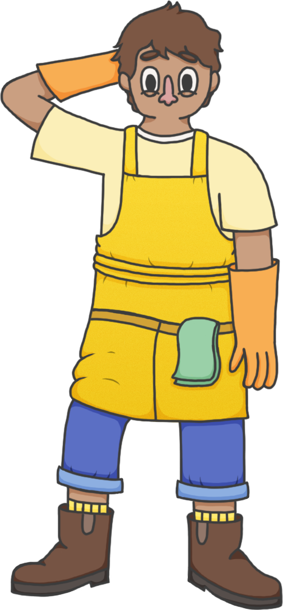
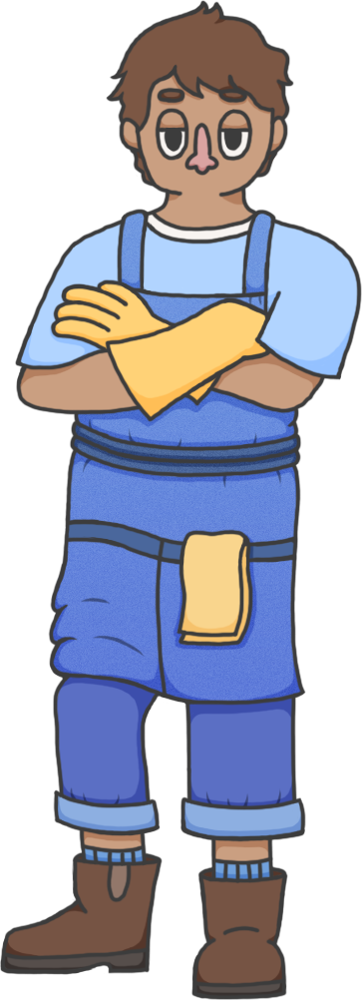
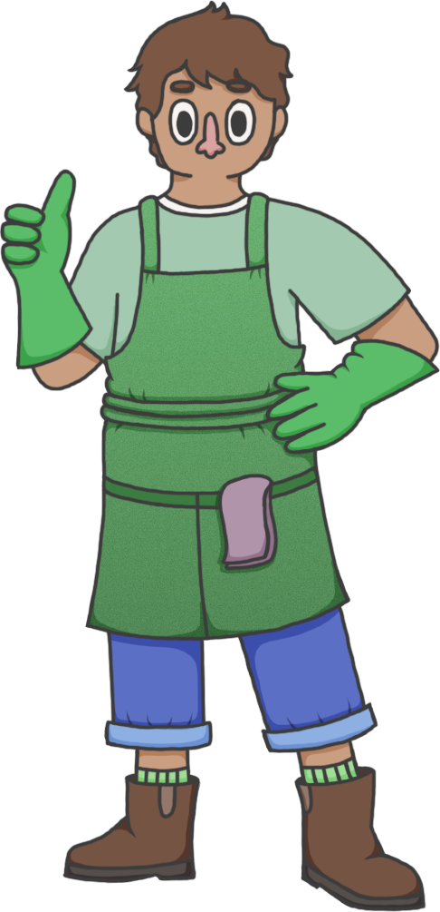
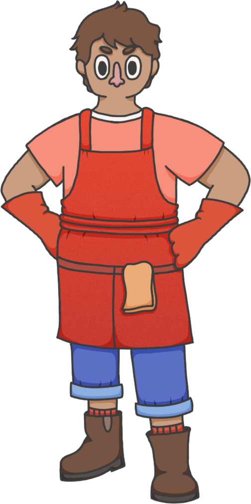
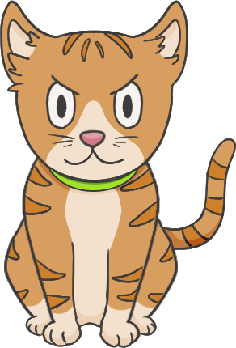
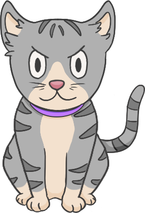
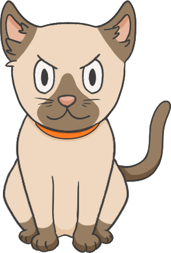
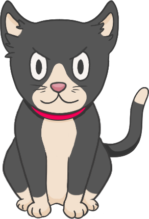
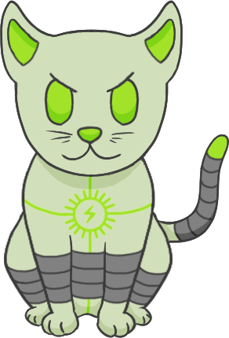
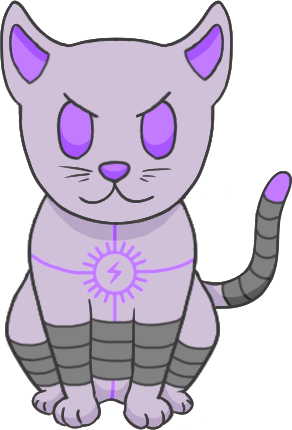
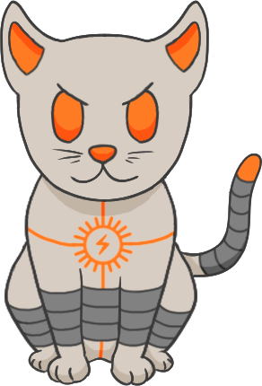
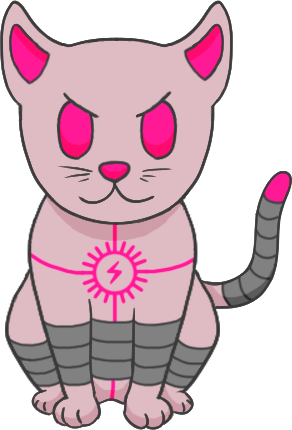
Every level started from the same question: where would you find a cat, and what can that place teach the Cats and Keepers? The answer picks the setting, the setting decides what the level teaches, and the Hotel brings it all together.
{{ l.name }}
{{ l.theme }} Teaches {{ l.teach }}- Opposite corners. Keepers spawn in one corner, Cats in the other, so both teams get a breather before the chaos starts.
- Loops, not dead ends. Keep a constant loop going and cut dead ends wherever possible, so both teams move fluidly through the space.
- Balanced from the first second. Every level begins with each interactable set up so neither side starts with the advantage.
- Built around the biggest props. Keeper size, the bed and the bathtub set the room metrics.
The outer shell stays 100% intact, but the entire interior changes. That might mean inverting the level, moving walls and rooms around, or removing walls entirely. The time of day shifts too.
When I changed a layout I'd often duplicate the original first, so I kept a saved copy of the idea to use later for a variant. Returning players recognize the place but have to learn it all over again.
Apartment, Basement and Cat Cafe · 3 variants each = 9{{ fl.name }}
{{ fl.note }}
I wanted a fryer for the Cat Cafe, but there wasn't one at the time. So I modeled one in ProBuilder, placed it over the sink object, and dirtied the water to a nice oily brown. Voilà, a fryer.
Weighted level variant selection
At the start, the game only had four levels: Tutorial, Crazy Cat Lady's Apartment, Basement and Boss's House. With that few, replayability was a real problem. Variants were my answer, and this system decides which version of a level loads each time, using weights, cooldowns and a pity timer.
- 1Pity check first. Any entry off cooldown whose miss counter has reached its threshold is forced. Most misses wins; a pity pick skips the roll entirely.
- 2Base roll. One random number. Under 0.60, the base level loads. The base chance is absolute.
- 3Variant roll. The leftover slice is split between variants off cooldown, by weight. Variant chances are relative weights; only the base's number is absolute.
| Entry | Per roll | Measured* | Pity at |
|---|---|---|---|
| Base | 60.0% | 56.8% | off |
| Variant 1 | 17.1% | 17.8% | 10 misses |
| Variant 2 | 14.3% | 15.0% | 15 misses |
| Variant 3 | 8.6% | 10.4% | 20 misses |
Deep dive: resets & edge cases
- The picked entry's miss counter resets and its 1-roll cooldown starts. Every other entry's counter goes up, even ones sitting out on cooldown.
- A variant on cooldown hands its slice to the other variants, never to the base. Right after Variant 1 lands, the odds are Base 60 / V1 0 / V2 25 / V3 15.
- Longest measured drought: Base 16 rolls, V1 13, V2 17, V3 21.
- If two variants pass their threshold at once, only the one with more misses fires; the other waits a roll. Back-to-back pity is normal.
- If every variant is on cooldown, the base loads. Counters reset on play mode or first load and aren't saved between sessions; each level tracks its own.
- Setting a cooldown at or above a variant's threshold makes it deterministic, so the editor warns you to keep thresholds above cooldowns.
Code: the two-tier roll (RollLevelSelect, lines 150–174)
{{ codeRoll }}
Line 162 is the base check. Line 164 rescales the leftover roll back to 0–1, which turns variant weights into shares of the remainder. Lines 167–174 walk the cumulative weights.
Controller-aware input prompts
Players switching between controller types didn't know which button to press, because every prompt defaulted to Xbox no matter what they were holding.
- One listener for everything. A single PassThrough input action fires on every stick, button, key and mouse event, so no swap gets missed.
- Reads the device. Each event reports which device sent it. "Sony", "DualShock" or "DualSense" means PlayStation; "Microsoft" or "Xbox" means Xbox; unknown pads fall back to Xbox.
- No flicker. A 0.5s cooldown, an analog dead zone and a blacklist for Enter and Start stop accidental swaps.
- Per player in couch co-op. Each player's device is the first one paired to them, captured when they join, so everyone on one PC sees their own buttons.
- The trickiest part: making the values hold across scenes and locking each player's controller type at the start of a level, especially in couch co-op with multiple controllers on one device.

Code: device detection
{{ codeInput }}
Every level went through the same loop. Playtest early and often, and only polish once the space works.
Keeper size and the biggest interactables, the bed and the bathtub, set the minimum room and doorway sizes.
ProBuilder for every graybox; Google Images for reference.
I walked the artists through the vision, the asset list, the layout and the item placement, then finalized props together.
Creating new levels that felt fun, novel and engaging with a limited set of tools and interactables, then communicating each new element to players in a way they'd remember going forward.
The trade-off: some level ideas got cut entirely because the tools and interactables they needed didn't exist. Other times I found a workaround, like the Cat Cafe fryer.
- All in person, in couch co-op with four controllers: usually three Xbox and one keyboard and mouse.
- Everyone starts on the Tutorial to get a feel for the level flow.
- Then I sit back with a pen and paper and watch them play.
- I only answer questions that would leave someone completely stuck. Otherwise, they figure it out on their own.